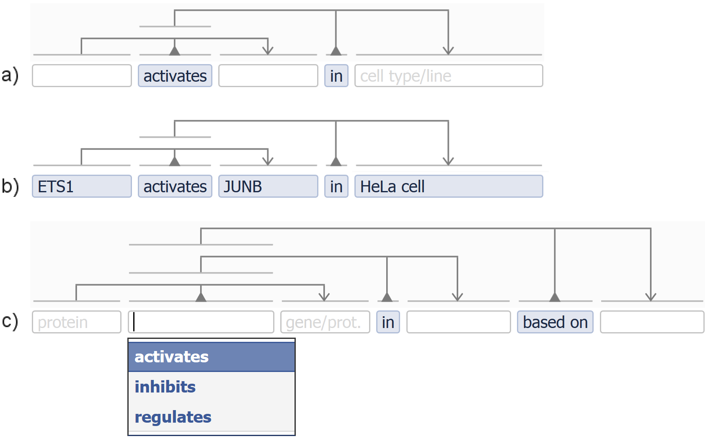

5. Discussion
Novelty
VSM is an entirely new and simplified approach for capturing knowledge. It makes it easier for curators to make the shift from thinking in natural language to formulating in structured statements. We described how to build VSM-sentences: diverse statements that can contain highly contextualized information, yet in a format that is both easily readable by humans and comprehensible by algorithms. VSM‘s terms enable a user to disambiguate concepts with the help of ontologies and identifiers. VSM‘s connectors enable a user to disambiguate the internal structure of information, and support an uniform and intuitive method for creating statements with high structural transparency. Tridents, bidents, and lists cover many use cases; coreferences support advanced cases. The three Principles give conceptual descriptions for working with terms and connectors. Templates make VSM as easy as filling in spreadsheets or forms, or easier because of autocomplete support. Extra features make VSM even more expressive.
VSM thus forms a bridge that makes computational understanding of extremely diverse, human-readable quasi-sentences a reality. It is the solution to a long-standing problem for curation in the biosciences, and likely beyond.
Table 1 compares VSM with other knowledge representation and tooling methods, on aspects such as ease-of-use and semantic internals. Controlled languages are VSM‘s closest relative, but VSM replaces their many rules by just a few connector types, and their fixed keywords and symbols by an approach that treats all terms equivalently, and that can use synonyms for readability. Form-based entry methods are easy to use but poor on inherent semantics; VSM-templates copy their ease-of-use, and are extensible. RDF‘s high expressivity is enabled by triples which are also present in VSM. But while RDF targets IT experts, VSM is designed with field-experts in mind: the biologists and curators. VSM should not be confused with text annotation, which is the tagging of entities and relations in natural language sentences as they appear in a paper. VSM should also not be confused with parse trees, which are generated by text-mining algorithms for top-down syntactic analysis of natural language, rather than bottom-up information construction with VSM.
Table 1. Comparison of VSM and other information handling methods. VSM is an information capturing and representation method, most closely related to controlled languages, form-based entry methods, and RDF. VSM is much less related to text-annotation and natural language analysis tools.
Roadmap
Step 1 : Toward implementation 1 This is the roadmap for the future, at the time of writing. – Steps that we already took include: design, prototype implementation, prototype application and iterative development based on curator feedback. – And now, last but certainly not least: Communication of the ideas behind VSM, through this text.
To demonstrate our ideas for an interactive VSM UI, we implemented a small prototype.
We used it among others to create the figures with VSM-sentences in this text, and to create the interactive examples on this site.
We are currently converting this prototype into software modules that can be reused in any curation project.2
And you’re invited to contribute!
The code is in the ‘vsmjs’ organization on GitHub.
The three most fundamental modules are vsm-dictionary,
vsm-autocomplete, and
vsm-box.
Fully usable software should not only provide an interface for entering VSM-sentences, but also provide support for storing and querying them. Storage can be done in several ways: for instance as JSON-based graphs, or directly into a graph database. In addition, a VSM-to-RDF mapper could automatically produce RDF graphs, like the example in Fig 9. This would have the advantage of making VSM-sentences readily queryable with SPARQL. Alternatively, a tool for building queries that directly use VSM graph patterns could help users avoid the complexity of RDF-reifications.

Fig 9. Example conversion from VSM to RDF: a VSM-sentence is easier to understand than RDF. The VSM-sentence in (a) was manually converted to (b): a possible graph representation in RDF, using an example controlled-vocabulary “ex”. The relation “activates” is used as the subject of another triple and thus needs a ‘reification’ construction in RDF. Here, both representations show the two distinct “device” concepts: one only located in China and activated but not yet exploding, the other one exploding as well. The bident-part “it explodes” needs to be represented by a triple in RDF. The relation “ex:causes” could either connect the nodes “ex:actives” and “ex:belongs_to_class”, or could connect their reified ‘blank nodes’. For curators, the VSM-sentence is clearly much easier to read than the RDF graph.
Step 2 : Toward initial adoption: use with templates
For curators. Learning new things always poses some sort of threshold. As a first introduction to VSM, a curation project could start off by having novice curators use only templates, perhaps even with hidden connectors. As most people are familiar with spreadsheets or forms, the use of VSM-templates does not require a steep learning curve: the curation process uses readable statements that are essentially self-explanatory as to what belongs in which empty field, and is comfortably augmented with ontology lookup and term auto-completion. More experienced curators who encounter the actual need to capture information that goes beyond a template, may gradually venture into learning more about VSM and add and connect extra terms and structure.
For IT experts. Templates are also a good start for being able to write queries in the standard way, which is: relying on a data-schema that tells precisely what kind of information is available for querying. Still, when a curator captures information that exceeds the template (e.g. extra details about a protein), then a query could return a term, plus its attached subgraph. This would be a VSM-phrase that is already conveniently human-readable. If a certain type of extension occurs often, then queries could be updated to search specifically for that information too. So instead of having a data-format that dictates what curators may capture, VSM enables a curator-driven process, where captured information may steer query development. This exciting prospect enables a focus on semantic preservation first, which then guides or motivates processing technology to catch up.
For third parties. Templates may also be useful to ensure that captured information is readily translatable to other data formats.
For example, we are using templates in a pilot curation project, and these are helpful to export relevant parts of VSM-sentences
and to contribute to established projects like GO Annotations and IntAct.
Furthermore, the user-friendliness of the interface could stimulate the design of dedicated templates for entry of knowledge into other formats like
BioPAX,
SBGN and SBML.1 • BioPAX: Wikipedia:BioPAX, biopax.org,
Demir E, et al: The BioPAX community standard for pathway data sharing (2010), Nature Biotechnology;
• SBGN: Wikipedia:SBGN, sbgn.org,
Le Novère N, et al: The Systems Biology Graphical Notation (2009), Nature Biotechnology;
• SBML: Wikipedia:SBML, sbml.org,
Hucka M, et al: The systems biology markup language (SBML): a medium for representation and exchange of biochemical network models (2003), Bioinformatics.
Validity checks or constraints could accompany these templates to ensure compliance.
Also, when natural language processing (NLP) algorithms extract specific information types from literature, they could fill in the extracted facts into corresponding VSM-templates. These, curators may then verify, correct or extend. Vice versa, manually filled templates may serve as a ‘training corpus’ for NLP, resulting in a virtuous circle of co-improvement.
Step 3 : From templates toward full use of VSM
Relation terms. In order to move from templates to using VSM‘s full flexibility, there are some challenges to overcome. The first challenge is missing terms: while controlled vocabularies are typically incomplete, VSM has a particular need for relation terms and IDs, which are often not yet available. A first solution would be to enable curators to build term lists for local use, which are then flagged as new entries that should be considered by ontology experts to be included in shared controlled vocabularies.
Paraphrasing. A second challenge is related to flexibility: there is freedom to express the same piece of information, with different levels of structural detail. For example, the single term “liver-cell” is equivalent to the more structurally transparent triple “cell in liver”, and both expressions will likely be entered by curators, in a large enough project. This calls for mechanisms that can map structures with equivalent meaning, in order to retrieve all variants for a particular query. Still, this process will be less complicated than finding all variants that paraphrasing allows in natural language, because VSM represents the information in clearly defined graph structures.
Assistance. Swift and nimble curation with full VSM may be achieved with assistance tools. First, intelligent autocompletion may be trained, that suggest e.g. common prepositions after entered relations. Also, NLP techniques could suggest and add VSM-connectors. Finally, algorithms could suggest partial or full translations of free text (or figures) to VSM. This may be accelerated by compiling a set of VSM translations for common free-text phrases. In the long term, a VSM-sentence may serve as an interface to show how a machine understood a free-text sentence.
Potential scale of use
We envision that VSM will first be applied in new curation projects by scientists who would otherwise use spreadsheets or develop a local UI. Such practical use-cases will be instructive to inspire new ways forward. We still have a lot to learn about how to apply VSM in proper use-cases, and how to benefit from it, so it is important to recognise that this is just a first step.
It has not escaped our attention that VSM‘s expressiveness enables a ‘general purpose’ curation platform, rather than the current ‘single purpose’ platforms. VSM‘s ease-of use may also facilitate a general crowdsourcing approach, to cover entire biological domains or indeed the entire life sciences. Although this would require a heavy investment in software development, it could pave the way to a platform that allows for full digital summaries of any research paper. VSM-based curation thus would provide the scientific community with the tools for converting new and existing knowledge into a structured knowledge resource. The content of a paper could for instance resemble a wiki page, but with information that is both human- and computer-understood. While ‘digital abstracts’ have long been a dream, VSM provides a major step in that direction.
Next! : Read about an application of VSM on the SciCura page
Or first take a peek at the VSMGraphs page
Or skip to the About page
or go back to How VSM Works or the Summary or the Examples page
- 1 This is the roadmap for the future, at the time of writing. – Steps that we already took include: design, prototype implementation, prototype application and iterative development based on curator feedback. – And now, last but certainly not least: Communication of the ideas behind VSM, through this text.
- 2
And you’re invited to contribute!
The code is in the ‘vsmjs’ organization on GitHub.
The three most fundamental modules are vsm-dictionary, vsm-autocomplete, and vsm-box.
Blue notes list:
- 1 • BioPAX: Wikipedia:BioPAX, biopax.org,
Demir E, et al: The BioPAX community standard for pathway data sharing (2010), Nature Biotechnology;
• SBGN: Wikipedia:SBGN, sbgn.org, Le Novère N, et al: The Systems Biology Graphical Notation (2009), Nature Biotechnology;
• SBML: Wikipedia:SBML, sbml.org, Hucka M, et al: The systems biology markup language (SBML): a medium for representation and exchange of biochemical network models (2003), Bioinformatics.
Grey notes list: